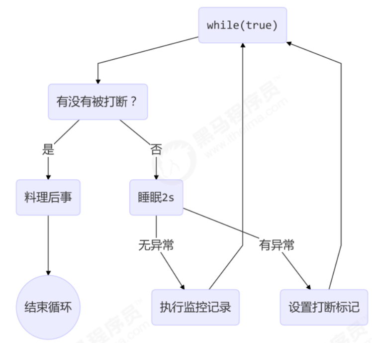

Thread类方法
Thread中方法有些是静态方法，有些是对象方法。对于类方法不难理解，例如 sleep 和 yield，是在哪个线程执行体中调用就对哪个线程起作用。而 join 和 wait 这种是由线程对象调用的就得注意下，其实他们都是调用了wait方法，wait方法必须在 synchronized 块里使用，sychronized 块一定锁住了一个对象（一般是当前对象），那么调用 wait 方法的就是当前对象（被锁住的对象，join 里是线程对象），这个时候不要犯糊涂，始终记住无论是哪个对象调用的，只要这个方法在某个线程执行体里被调用，那么它就是这个线程执行体里的一个普通成员变量调用的某个普通方法（被锁住的对象调用 wait 方法），那么 wait 所在的线程就会被阻塞。
1. start 和 run
- 直接调用 run 是在主线程中执行了 run，没有启动新的线程
- 使用 start 是启动新的线程，通过新的线程间接执行 run 中的代码，注意调用start方法只是让线程进入Runnable(就绪)状态，等待调度器调度（CPU分配时间片），并不意味着马上执行，只有得到CPU时间片线程才会进入Running(运行)状态。注意
start方法只能调用一次
2. sleep
让当前正在执行的线程（写在哪个线程里哪个线程暂停）暂停一段时间，调用 sleep 会让当前线程从 Running 进入 Timed Waiting 状态（阻塞）。
sleep()方法是一个类方法，有两种重载形式。
static void sleep(long millis)：让当前正在执行的线程暂停millis毫秒，并进入阻塞状态，该方法受到系统计时器和线程调度器的精度与准确度的影响。static void sleep(long millis, int nanos)：让当前正在执行的线程暂停millis毫秒加nanos毫微秒，并进入阻塞状态，该方法受到系统计时器和线程调度器的精度与准确度的影响。
当前线程调用sleep()方法进入阻塞状态后，在其睡眠时间段内，该线程不会获得执行的机会，即使系统中没有其他可执行的线程，处于sleep()中的线程也不会执行，注意睡眠结束后的线程未必会立刻得到执行，还需要等待调度器的调度。因此sleep()方法常用来暂停程序的执行以及限制cpu的使用。在使用 sleep 方法时要注意，这个方法会抛出异常，要写在 try-catch 块里。
- 应用sleep限制cpu的使用
在没有利用 cpu 来计算时，不要让 while(true) 空转浪费 cpu，这时可以使用 yield 或 sleep 来让出 cpu 的使用权给其他程序。
1 | while(true) { |
有一个问题是sleep方法的可读性不太强，其实Java1.5后提供了TimeUnit.时间单位.sleep方法，这个方法可读性比较强，效果跟sleep完全相同（因为底层也是调用了sleep方法）
1 | TimeUnit.SECONDS.sleep(1); // sleep一秒钟 |
3. yield
与sleep相同，这也是一个类方法，它也可以让当前正在执行的线程暂停，但它不会阻塞该线程，它只是让该线程从Running（运行）进入 Runnable（就绪）状态，然后让出处理器资源去调度执行其它线程。yield()只是让当前线程“暂停”一下，让系统的线程调度器重新调度一次，具体的实现依赖于操作系统的任务调度器，完全可能的情况是：当某个线程调用了yield()方法暂停之后，线程调度器又将其调度出来重新执行。
- 在这里介绍一下线程优先级
每个线程执行时都具有一定的优先级，优先级高的线程获得较多的执行机会，而优先级低的线程则获得较少的执行机会。每个线程默认的优先级都与创建它的父线程的优先级相同，在默认情况下，main线程具有普通优先级，由main线程创建的子线程也具有普通优先级。Thread类提供了setPriority（int newPriority）、getPriority()方法来设置和返回指定线程的优先级，其中setPriority()方法的参数可以是一个整数，范围是1～10之间，也可以使用Thread类的如下三个静态常量。
- MAX_PRIORITY ：其值是10。
- MIN_PRIORITY ：其值是1。
- NORM_PRIORITY：其值是5。
其实调度器并不是严格按照优先级调度，只是说优先级高的被调度的几率大一下，如果 cpu 比较忙，那么优先级高的线程会获得更多的时间片，但 cpu 闲时，优先级几乎没作用。例如：
加 yield
1
2
3
4
5
6
7
8
9
10
11
12
13
14
15
16
17
18
19
20
21
22
23
24
25
26
27
28
29
30
31
32
33
34
35
36
37public class Test {
public static void main(String[] args) {
Runnable task1 = () -> {
int count = 0;
for (;;) {
System.out.println("---->1 " + count++);
}
};
Runnable task2 = () -> {
int count = 0;
for (;;) {
Thread.yield(); // 1
System.out.println(" ---->2 " + count++);
}
};
Thread t1 = new Thread(task1, "t1");
Thread t2 = new Thread(task2, "t2");
// t1.setPriority(Thread.MIN_PRIORITY); // 2
// t2.setPriority(Thread.MAX_PRIORITY);
t1.start();
t2.start();
}
}
// yield让出后得到的机会少
/*
---->1 158521
---->1 158522
---->1 158523
---->1 158524
---->2 1043
---->1 158525
---->1 158526
---->1 158527
---->1 158528
*/设置优先级
1
2
3
4
5
6
7
8
9
10
11
12
13
14
15
16
17
18
19
20
21
22
23
24
25
26
27
28
29
30
31
32
33
34
35public class Test {
public static void main(String[] args) {
Runnable task1 = () -> {
int count = 0;
for (;;) {
// Thread.yield(); // 1
System.out.println("---->1 " + count++);
}
};
Runnable task2 = () -> {
int count = 0;
for (;;) {
System.out.println(" ---->2 " + count++);
}
};
Thread t1 = new Thread(task1, "t1");
Thread t2 = new Thread(task2, "t2");
t1.setPriority(Thread.MIN_PRIORITY); // 2
t2.setPriority(Thread.MAX_PRIORITY);
t1.start();
t2.start();
}
}
// 优先级低的得到的机会少，但他们两个之间具体什么关系依赖于调度器
/*
---->1 3
---->1 4
---->1 5
---->2 49
---->2 50
---->2 51
---->2 52
*/sleep()方法和yield()方法的区别：
sleep()方法暂停当前线程后，会给其他线程执行机会，不会理会其他线程的优先级；但yield()方法
通常（取决于调度器）给优先级相同或优先级io更高的线程执行机会的概率要大一些。sleep()方法会将线程转入阻塞状态，直到经过阻塞时间才会转入就绪状态；而yield()不会将线程转入阻塞状态，它只是强制当前线程进入就绪状态。因此完全有可能某个线程调用yield()方法暂停之后，立即再次获得处理器资源被执行。
sleep()方法声明抛出了InterruptedException异常，所以调用sleep()方法时要么捕捉该异常，要么显式声明抛出该异常；而yield()方法则没有声明抛出任何异常。
sleep()方法比yield()方法有更好的可移植性，通常不建议使用yield()方法来控制并发线程的执行。
4. join
join方法是一个对象方法，当在某个程序执行体中（在哪个线程的执行体里调用，则哪个线程被阻塞）调用join()方法时，此线程将被阻塞（相当于调用了wait），Java中是由Runnable转到Waiting状态，直到被join()方法加入的线程执行完为止。join()方法内部调用了wait()方法，可以把join()理解成特殊的wait(long millis)方法，这个方法的millis恰好等于join的线程的执行时间。
join()：等待被join的线程执行完成。join(long millis)：等待被join的线程的时间最长为millis毫秒。如果在millis毫秒内被join的线程还没有执行结束，则不再等待。join(long millis, int nanos)：等待被join的线程的时间最长为millis毫秒加nanos毫微秒。
通过下面这个例子能更加深入的理解join的作用：
1 | public class Test { |
Join的用处
可以借助join实现多线程的同步，同步和异步的概念以调用方角度来讲如下：
- 需要等待结果返回，才能继续运行就是同步；
- 不需要等待结果返回，就能继续运行就是异步。
例如我们要等待多个线程的执行结果：
1 | public class TestJoin { |
上例我们发现，如果join多个线程，join的多个线程并行执行，则被join的线程等待的时间应该为最长线程的执行时间。如果颠倒两个 join 呢？最终都是输出相同的结果，因为如果先join t2，则t2执行结束后，t1.join就无需等待了，此时t1已经执行结束了。
5. interrupt
interrupt 方法打断线程
- case1：打断 sleep, wait, join （阻塞）的线程 – 抛出
InterruptedException异常并重置打断标记为false - case2：打断运行中的线程 – 打断标记变为 true
打断阻塞状态（在Java中是WAITINGorTIMED_WAITING状态）中的线程，会抛出一个InterruptedException异常，并且会重置打断标记为false。
- 介绍一下打断标记
Thread类里有一个isInterrupted方法可以返回当前线程是否被打断，被打断返回true，否则false。
1 | public boolean isInterrupted() { |
还有一个类似的静态方法interrupted也可以返回当前线程是否被打断，被打断返回true，否则false，但是会重置打断标记为false。
1 | public static boolean interrupted() { |
打断阻塞状态的线程
1 | public class Test { |
上面两个false是意义不同的，第一个代表当前线程正常运行，没有被打断；而第二个false代表线程在sleep, wait, join 中（阻塞状态）被打断，会抛出异常并将打断标记重置为false。
打断正常运行的线程
1 | public class Test { |
打断后标记变为true， 但是进程并没有停止，那么这个打断到底有啥用啊？我们怎么让被打断后的进程停下来哪？我们可以借助打断标记，如果打断标记为真，就手动退出进程。
1 | public class Test { |
interrupt应用：多线程设计模式之两阶段终止
Two Phase Termination :在一个线程 T1 中如何“优雅”终止线程 T2？这里的【优雅】指的是给 T2 一个料理后事的机会。
错误思路
- 使用线程对象的 stop() 方法停止线程
- stop 方法会真正杀死线程，如果这时线程锁住了共享资源，那么当它被杀死后就再也没有机会释放锁， 其它线程将永远无法获取锁
- 使用 System.exit(int) 方法停止线程
- 目的仅是停止一个线程，但这种做法会让整个程序都停止
两阶段终止模式
- 应用场景：后台监控线程（需要设置停止选项）
- 思路

1 | @Slf4j(topic = "c.TwoPhaseTermination") |
在睡眠时被打断，抛出异常并在捕获异常后，也就是 catch 块中重新设置打断标记为 true（即再来一次interrupted打断），下次循环会优雅的退出线程。正常运行时被打断，也可以优雅的退出线程。
6. setDaemon
主线程与守护线程
- 默认情况下，Java 进程需要等待所有线程都运行结束，才会结束。
- 有一种特殊的线程叫做守护线程，只要其它非守护线程运行结束了，即使守护线程的代码没有执行完，也会强制结束。
Thread有一个setDeamon方法，将当前线程设置为守护线程，其中daemon是一个boolean值，通过源码我们发现，它会先通过isAlive方法判断线程的状态，如果线程已经运行起来再调用 setDeamon 方法，会抛出异常，还有一点需要注意，这里抛出异常是在t1.setDeamon所在的线程里，不影响 t1 线程，所以setDeamon一定要写在start方法前。
- 简单介绍一下
isAlive方法：判断当前的线程是否处于活动状态。活动状态是指线程已经启动且尚未终止，线程处于正在运行（Running）或就绪（Runnable）的状态，就认为线程是存活的。
1 | public final void setDaemon(boolean on) { |
我们可以通过java进程是否结束判断线程是否全部结束。
1 | public class Test { |
运行上例会发现当主线程结束后，t1 线程仍然继续运行，此时 java 进程也继续运行。
如果此时把 t1 设置成守护进程
1 | public class Test { |
t1线程在mian线程结束后也自动结束，此时java进程也会结束。
守护线程应用
- 垃圾回收器线程就是一种守护线程；
- Tomcat 中的 Acceptor 和 Poller 线程都是守护线程，所以 Tomcat 接收到 shutdown 命令后，不会等待它们处理完当前请求。